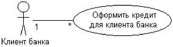
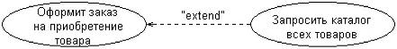
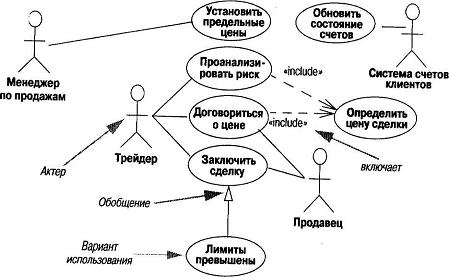

Практична робота з теми розробка варіантів використання
Метою є вивчення моделі варіантів використання за допомогою мови UML.
Теоретичні відомості
Прецеденти(Варіанти використання - Use Cases) - це детальні процедурні описи варіантів використання системи усіма зацікавленими особами, а також зовнішніми системами, тобто усіма, хто(чи що) може розглядатися як актори(actors). По суті, це свого роду алгоритми роботи з системою з точки зору зовнішнього світу. Є основою функціональних вимог до системи, дозволяють описувати межі проектованої системи, її інтерфейс, а потім виступають як основа для тестування системи замовником за допомогою приймальних тестів.
Призначені для користувача історії (stories) - скорочений варіант прецедентів, без опису побічних гілок, усіх розширень, пред- і пост- умов, менш формальні і коротші. Використовуються в XP в основному для виконання планування розробки, оцінки часу, складності, розподілу обязаностей в колективі розробників, ну і як основа для тестування теж(?).
UML - уніфікована мова візуального моделювання, що використовує нотацію діаграм. В основному використовується при створенні додатків за об'єктною технологією, але не лише. Використовується взагалі для моделювання ПО, завдань, технічних систем і ін. Основні типи діаграм : 1) класів і пакетів, 2) взаємодії(послідовностей і кооперації), 3) прецедентів, 4) активність(діяльності), 5) станів, 6) компонентів, 7) розміщень. На етапі аналізу постановки завдання і вимог до системи використовують діаграми прецедентів, діаграми активності для розшифровки змісту прецедентів, діаграми станів для моделювання поведінки об'єктів із складним станом, діаграми класів для виділення концептуальних сутностей предметній області завдання(по аналогії з ER- діаграмами ?!). У цій роботі використовуються в основному діаграми прецедентів, активності, можливо - станів.
Діаграма прецедентів - призначена для відображення прецедентів, акторів і їх взаємодії і відношення один до одного.
Діаграма активності - призначена для заміщення схем алгоритмів, для відображення якої-небудь процедури(з розширеннями для паралельної обробки, отоюражения станів і ін.)
Діаграма станів - варіант нотації для відображенні машини станів або кінцевого автомата. (Див. Теорію автоматів !!!) Екстремальне планування - вид діяльності в екстремальному програмуванні(XP), який призначений для створення конкретного плану дій із створення проекту, розподілу обов'язків, виділення пріоритетів завдань, установки черговості рішення завдань, виміру швидкості розробки. Виконується постійно в ході роботи над проектом. Метою є складання плану реалізації прецедентів і дрібніших завдань, що становлять прецеденти, а також технічних завдань, не видних замовникові, визначення кількості версій системи, кількості ітерацій, розбиття завдань по ітераціях, оцінки часу виконання проекту. Спочатку складається план версій, план ітерацій першої версії і детальний план на першу ітерацію.
Версія - це продукт, готовий до використання, з частково реалізованою необхідною функціональністю.
Ітерація - час, після закінчення якого видається програма, яку можна передати замовникові для отримання від нього відгуків, зауважень і ін., а також - програма, готова до кінця цього тимчасового інтервалу. Ітерація також може містити готову функціональність, але вона може бути недостатньої для впровадження цієї ітерації у замовника. В той же час вона дає уявлення про напрям проекту, про його успішність і швидкість роботи команди розробників. В ході планування розробник(и) розглядають призначені для користувача історії, додають до них осяжні технічні завдання, оцінюють час виконання кожного завдання в ідеальних тижнях і днях і складають план випуску версій, зразковий план ітерацій і детальний план ітерацій(див. приклади).
Типи і формати прецедентів.
Прецеденти типу "чорний ящик" і системні обов'язки
Прецеденти типу "чорний ящик"(black - box use cases) - це найтиповіший і рекомендований тип прецедентів. Вони не описують внутрішню роботу системи, її компоненти або дизайн. Навпаки, системі ставляться деякі обов'язки(responsibilities). Цей метафоричний термін широко застосовується в об'єктно-орієнтованому проектуванні: програмні елементи мають обов'язки і взаємодіють з іншими елементами зі своїми обов'язками.
Визначаючи обов'язки системи через прецеденти типу "чорний ящик", можна вказати, що повинна робити система(функціональні вимоги), не розписуючи, як це робити(не виконуючи проектування). Взагалі, терміни "аналіз" і "проектування" частенько зводяться до питань "що" і "як". Це важливі питання в хорошій програмній розробці. В процесі аналізу вимог треба уникати ухвалення рішень "як", а описувати лише зовнішню поведінку системи як чорного ящика. Пізніше, на етапі проектування, створюється рішення, що задовольняє розробленій специфікації.
Обробка(оформлення) продажу(process sale). Покупець підходить до каси з вибраними товарами. Касир за допомогою POS- системи реєструє кожен товар. Система відображає інформацію про кожне найменування товару і обчислює загальну суму. Покупець вводить необхідну інформацію; система її верифицирует і реєструє. Система виконує інвентаризацію. Покупець отримує товарний чек і покидає магазин з покупками.
Вільний - неформальний стиль опису. Опис прецеденту займає декілька абзаців і охоплює різні сценарії. Прикладом такого опису є розглянутий вище прецедент Повернення товару.
Розгорнутий - найбільш детальний стиль опису. При такому підході детально описуються усі кроки і варіанти розвитку сценарію, а також передумови і результати. Розглянемо приклад розгорнутого опису прецеденту для системи Оформлення продажу.
Приклад розгорнутого опису прецеденту
Для розгорнутого опису прецедентів існують різні шаблони форматування. Проте найчастіше використовується шаблон, приведений на Web- вузлі www.usecases .org. Цей стиль проілюстрований в наступному прикладі.
Прецедент П1. Оформлення продажу Основний виконавець. Касир. Зацікавлені особи і їх вимоги:
- касир. хоче точно і швидко ввести дані, не допускаючи помилок в платежі, оскільки недостача віднімається з його зарплати;
- продавець. хоче отримати свої комісійні від продажу;
- покупець. хоче купити товари і швидко оформити купівлю з мінімальними зусиллями. хоче отримати підтвердження факту купівлі для можливого повернення товару;
- компанія. хоче акуратно записати транзакцію і задовольнити інтереси покупця. хоче упевнитися, що служба авторизації платежів зафіксувала усі дані про платіж. зацікавлена в забезпеченні стійкості до збоїв; хоче продовжувати реєструвати продажі, навіть якщо серверні компоненти(наприклад, служба видаленої перевірки кредитоспроможності) недоступні. хоче автоматично оновлювати бухгалтерську документацію і вести складський облік;
- державні податкові служби. хочуть отримувати податок від кожного продажу. Таких служб може бути декілька, у тому числі національна і місцева.
Передумови. Касир ідентифікований і аутентифікований.
Результати (постумови). Дані про продаж збережені. Податки коректно вичислені. Бухгалтерські і складські дані оновлені. Комісійні нараховані. Чек згенерований. Авторизація платежу виконана.
Основний успішний сценарій (чи основний процес):
a) покупець підходить до касового апарату pos- системи з вибраними товарами;
b) касир відкриває новий продаж;
c) касир вводить ідентифікатор товару;
d) система записує найменування товару і видає його опис, ціну і загальну вартістю ціна обчислюється на основі набору правил;
e) касир повторює дії, описані в пп. 3-4, для кожного найменування товару;
f) система обчислює загальну вартість купівлі з податком;
g) касир повідомляє покупцеві загальну вартість і пропонує сплатити купівлю;
h) покупець оплачує купівлю, система обробляє платіж;
i) система реєструє продаж і відправляє інформацію про неї зовнішній бухгалтерській системі(для оновлення бухгалтерських документів і нарахування комісійних) і системі складського обліку(для оновлення даних);
j) система видає товарний чек;
k) покупець покидає магазин з чеком і товарами(якщо він щось купив).
Розширення(чи альтернативні потоки).
Для введення системи в лад і коректної обробки платежу треба забезпечити відновлення усіх транзакцій і подій з будь-якого кроку сценарію:
a) касир перезапускає систему, реєструється і пропонує відновити попередній стан;
b) система відновлює попередній стан. 2а. система визначає аномалію, що спричинила збій.
- система повідомляє про помилку касира, реєструє помилку і переходить в початковий стан;
- касир починає новий продаж;
- неправильний ідентифікатор;
- система повідомляє про помилку і відміняє введення цього найменування товару;
- у рамках однієї категорії існує декілька різних найменувань товару і ідентифікувати;
- конкретне найменування не потрібне(наприклад, 5 пакетів льодяників);
1) касир може ввести ідентифікатор категорії товару і кількість одиниць. 3-6а. покупець просить касира відмінити купівлю одного з товарів;
2) касир вводить ідентифікатор товару для видалення з продажу;
3) система відображає оновлену проміжну вартість;
4) 3-6б. покупець просить касира відмінити продаж;
5) касир відміняє продаж. 3-6в. касир призупиняє продаж;
6) система записує відомості про продаж так, щоб вони були доступні з будь-якого терміналу pos- системи;
- 4а. згенерована системою ціна товару не влаштовує покупця(наприклад, у нього є дисконтна карта і він розраховує на нижчу ціну товару);
- касир вводить команду про зміну ціни;
- система обчислює нову ціну;
- 5а. система виявляє збій при комунікації із зовнішньою службою обчислення податку. 1. система перезапускає службу з цього вузла pos - системи і продовжує роботу. 1а. система визначає, що служба не перезапускається;
- система сигналізує про помилку;
- касир сожет вручну вичислити і ввести суму податку або відмінити продаж;
- 5б. покупець повідомляє про покладену йому знижку(наприклад, для співробітників цього підприємства або постійних покупців);
- касир відправляє запит на знижку;
- касир вводить ідентифікаційні дані покупця;
- система надає суму знижки, вичислену на основі дисконтних правил.
Спеціальні вимоги:
- сенсорний екран з інтерфейсом користувача для великого плоского монітора. текст має бути видний з відстані один метр;
- відгук служби авторизації в 90% випадків приходить в течії 30 секунд;
- якимсь чином треба забезпечити робастное відновлення інформації у разі збою при доступі до видалених служб, таким як система складського обліку;
- можливість локалізації (представлення на різних мовах) тексту, що відображається;
- можливість додавання нових бізнес-правил на кроках 3 і 7 в процесі функціонування системи.
Список технологій і типів даних.
За. Ідентифікатор товару прочитується з штрих-кода(за наявності останнього) лазерним сканером або вводиться з клавіатури.
36. Ідентифікатор товару може визначатися за схемами кодування UPC, EAN, JAN або SKU. 7а. Інформація про відкритий кредит вводиться за допомогою прочитуючого пристрою або з клавіатури. 76. Підпис при оплаті чеком ставиться на паперовому документі. Проте очікується, що впродовж двох років більшість покупців вимагатимуть цифрові облаштування прочитування підпису.
Частота використання : майже постійно.
Відкриті питання:
- вивчити законодавство по оподаткуванню;
- досліджувати питання відновлення видалених служб;
- яке налаштування знадобиться для різних типів магазинів;
- чи повинен касир знімати касу при виході з системи;
- чи може користувач сам використати облаштування прочитування даних з картки або це повинен робити касир.
Той же прецедент у вигляді призначеної для користувача історії можна трактувати як стислий опис прецеденту, навіть ще більше стислий, щоб воно уміщалося на одній невеликій паперовій картці (типу перфокарти або листа із записника).
Кожен варіант використання відповідає окремому сервісу, який надає модельовану суть або систему за запитом користувача(актора), тобто визначає спосіб застосування цієї суті. Сервіс, який ініціалізувався за запитом користувача, є закінченою послідовністю дій. Це означає, що після того, як система закінчить обробку запиту користувача, вона повинна повернутися в початковий стан, в якому готова до виконання наступних запитів.
Актор є будь-якою зовнішньою по відношенню до модельованої системи суттю, яка взаємодіє з системою і використовує її функціональні можливості для досягнення певної мети або рішення приватних завдань. Кожен актор може розглядатися як деяка окрема роль відносно конкретного варіанту використання. Стандартним графічним позначенням актора на діаграмах є фігурка "чоловічка", під якою записується конкретне ім'я актора(мал. 10).
Рис.10 - Графічне позначення актора
У мові UML є декілька стандартних видів стосунків між акторами і варіантами використання :

Рис.11- Приклад графічного представлення відношення асоціації між актором і варіантом використання
- відношення асоціації(association relationship)
- відношення розширення(extend relationship)
- відношення узагальнення(generalization relationship)
- відношення включення(include relationship)

Рис.12 - Відношення розширення

Рис.13 Приклад графічного зображення відносини розширення між варіантами використання
Тут представлена діаграма для фінансової торгової системи (торгівля акціями, наприклад). Актори: Менеджер, Система рахунків, Трейдер, Продавець, а також різні прецеденти і стосунки між ними.
Порядок виконання роботи
Завдання для виконання роботи беруться з пункту 2.4 Завдання для груп студентів. У проектах 1 - 13 кожній групі студентів необхідно розробити вільний та розгорнутий опис прецедентів, UML діаграму use cases, розробити картки use cases специфікації згідно до інформації, що наведена у пункті 4.2 Теоретичні відомості. А також вирішити індивідуальні завдання пункту 4.4.
Індивідуальні завдання
Скласти список прецедентів і акторів, розписати 1-2 прецеденти детальніше, скласти план версій і ітерацій. Наприклад:
- інтернет - магазин.
- інформаційна система для обліку кадрів на невеликому підприємстві
- інформаційна система для розрахунку зарплати на невеликому підприємстві
- утиліта моніторингу мережі(для адміністратора мережі)
- повчальна програма з функцією контролю знань(це основна функція !) (фактично шматок цього варіанту розглянутий вище в п. 2.7)
- білінгова система для обліку інтернет-трафіку.
- веб - сервер
- поштовий сервер
- текстовий редактор(потім - текстовий процесор ?!)
- програма моделювання цифрових схем - інформаційна система складського обліку(облік приходу і відходу товарів, категорії, пошук і ін.)
- арм менеджера комп'ютерної фірми(не бухгалтерія !). - швидка прикидка конфігурацій, виписка рахунків, відстежування рахунків їх оплат і ін.
- арм начальника відділу техподдержки(облік ремонтів).
- графічний редактор(векторна графіка).
- графічний редактор(растрова графіка).